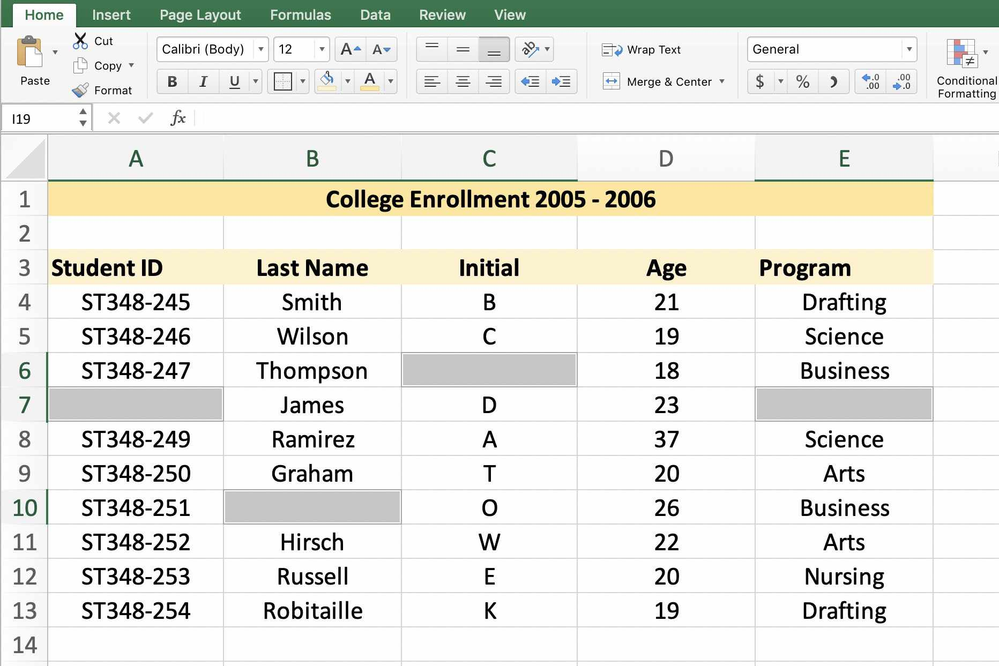
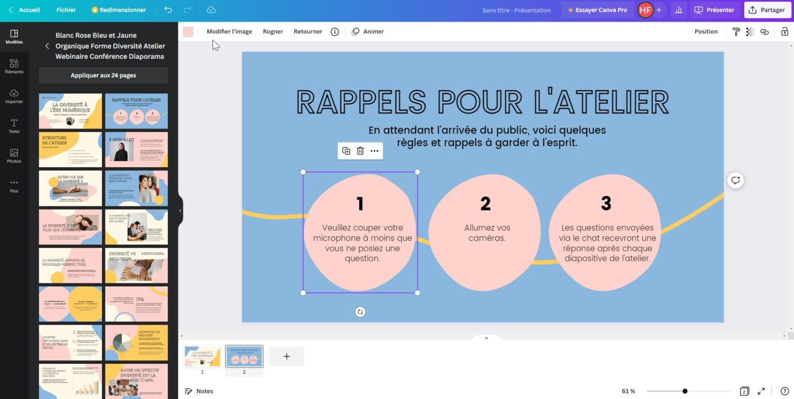
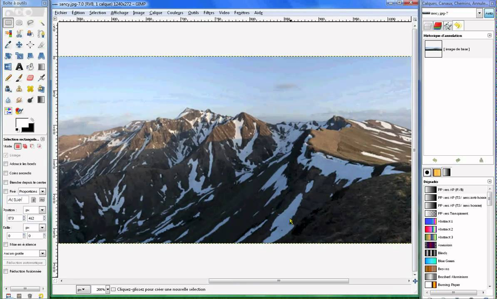
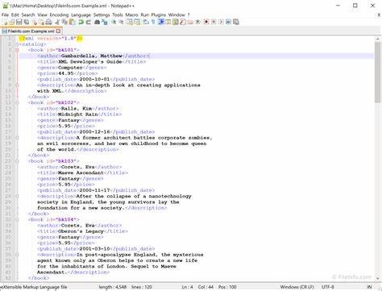
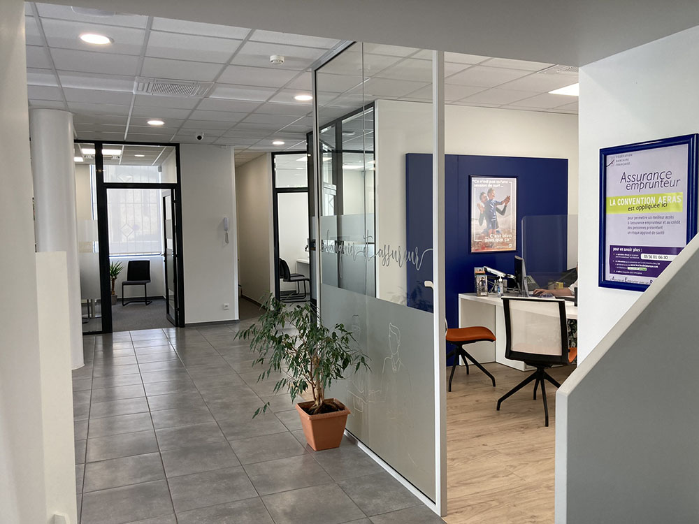

Revenir vers l'accueil
Aller directement à la partie traitant de :
J'ai appris qu'Excel est un outil puissant pour l'analyse de données, la création de tableaux et la gestion de calculs complexes. J'apprécie particulièrement sa polyvalence, ses fonctionnalités comme les tableaux croisés dynamiques et les graphiques, qui permettent de visualiser les données de manière efficace. De plus, la possibilité d'automatiser des tâches avec des macros est un atout majeur pour gagner du temps.

Sur l'application Canva, j'ai appris à créer facilement des designs graphiques professionnels grâce à une interface intuitive et à une large variété de modèles. J'apprécie particulièrement la possibilité de personnaliser chaque élément, ainsi que les options de collaboration qui permettent de travailler en équipe. C'est un outil polyvalent qui convient aussi bien aux débutants qu'aux graphistes expérimentés.
J'ai appris que GIMP est un outil puissant de retouche d'images, offrant une grande variété de fonctionnalités similaires à celles de logiciels professionnels. Ce que j'aime particulièrement, c'est sa flexibilité et sa personnalisation, ainsi que le fait qu'il soit open source, ce qui permet à tout le monde d'y accéder gratuitement. De plus, la communauté active offre de nombreux tutoriels et ressources pour aider les utilisateurs à améliorer leurs compétences.
J'ai appris que le codage HTML et CSS est essentiel pour créer et styliser des pages web. J'apprécie particulièrement la façon dont HTML structure le contenu et permet d'organiser les éléments, tandis que CSS offre la flexibilité de personnaliser l'apparence visuelle. Ensemble, ils permettent de donner vie à des idées et de créer des expériences utilisateur attrayantes.
J'ai choisi de faire mon stage en tant que chargé de clientèle à la Banque Populaire pour découvrir le monde bancaire et renforcer mes compétences en communication. J'ai appris à mieux comprendre les besoins des clients, à proposer des solutions adaptées et à gérer les relations avec eux. Une bonne expérience a été la gestion d'un projet d'amélioration du service client, où j'ai pu mettre en pratique mes idées et voir leur impact positif sur la satisfaction des clients. Cela m'a beaucoup motivé et a renforcé mon intérêt pour le secteur bancaire.
J'ai choisi de faire mon stage dans une entreprise spécialisée dans le ferroviaire parce que j'étais passionné par ce secteur et par l'innovation technologique qu'il véhicule. Pendant ce stage, j'ai appris l'importance de la sécurité et de la fiabilité dans les systèmes ferroviaires, ainsi que les défis liés à la maintenance et à l'optimisation des infrastructures. Une expérience mémorable a été ma participation à un projet d'amélioration des horaires de train, où j'ai pu collaborer avec une équipe multidisciplinaire et voir concrètement l'impact de notre travail sur l’efficacité des services. Ce stage m'a confirmé mon intérêt pour ce domaine et m'a permis de développer des compétences précieuses.
Souhaitez-vous revenir vers l'accueil ?